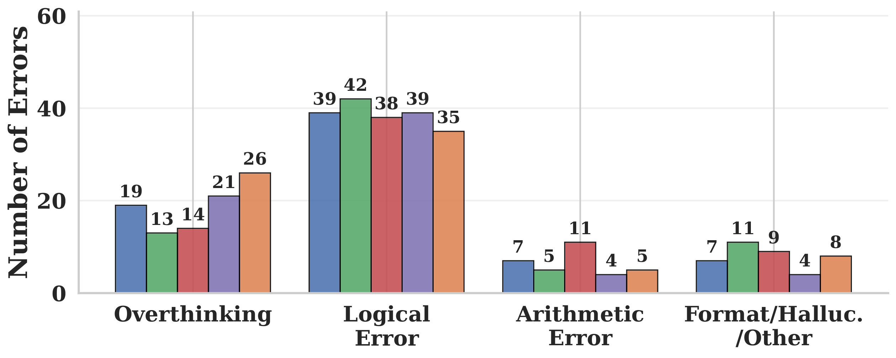
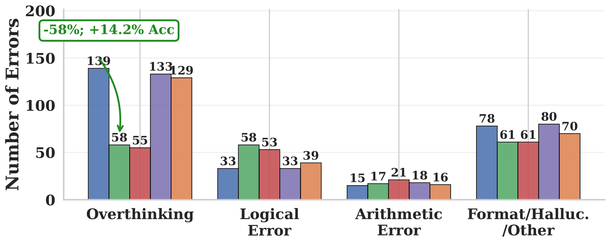

A token-level look at why aggressive PTQ makes reasoning models overthink.
TL;DR. Aggressive post-training quantization (PTQ) doesn't just degrade reasoning models — it makes them overthink. In up to 52% of 3-bit AWQ failures, the quantized model reaches the correct intermediate answer but spirals into hesitation tokens (“Wait”, “But”, “Alternatively”) and never commits. Token-level KL divergence between the BF16 and quantized models concentrates exactly on these tokens, at exactly the decoding positions where BF16 is already uncertain.
We evaluate five reasoning models (1.5B–32B), three PTQ methods (GPTQ, AWQ, FlatQuant), and five benchmarks. Mild quantization is essentially free, but pushing to 3-bit weights or W4A4KV4 hurts in both directions at once — accuracy drops and the chain of thought blows up.


DeepSeek-R1-Distill-Qwen-1.5B. On MATH-500, 3-bit AWQ drops accuracy from 85.6→47.0% while inflating CoT from 5.2K→23.4K tokens (4.5×).
Across all 28 model×quantization pairs, the Spearman correlation between accuracy loss and CoT length increase is ρ = −0.73. The models that lose the most accuracy also generate the longest chains — suggesting the extra reasoning isn't a side effect of failure, but a cause of it.
We hand-annotated MATH-500 failures and used GPT-5 (calibrated to >95% agreement) to scale the labels into four buckets: overthinking (reaches correct answer mid-trace then talks itself out of it), logical error, arithmetic error, and other.


To localize where the two models diverge, we run BF16 and 3-bit AWQ on the same MATH-500 prompts under identical generation prefixes and measure per-position KL divergence DKL(pt ‖ qt), then associate each KL value with the token the quantized model actually sampled.


Three things fall out:
If hesitation tokens at high-entropy positions really drive the failure, suppressing them at decode time should specifically shorten chains, reduce the overthinking error bucket, and leave the other categories alone. We hand-curate |S| = 50 overthinking markers and subtract a fixed penalty λ > 0 from their logits at every decoding step:
Sweeping λ ∈ [0.5, 4.0] across four token lists of equal size (overthinking markers, top-KL, low-KL, random) on Qwen-1.5B, averaged over 6 quantization configs and 5 benchmarks:


A symmetric sanity check: boosting the same overthinking markers (negative λ) inflates CoT by up to +445% and drops accuracy by up to −34%. Random and low-KL tokens stay flat. The lever is real, and it points in both directions.
The same effect generalizes across all five models and all PTQ settings: the penalty consistently reduces CoT length by 4.1–28.0% on average while preserving or improving accuracy. On MATH-500 under 3-bit AWQ, overthinking errors fall from 139 to 58 (−58%), without inflating the other error categories — exactly what the diagnostic predicts.
Caveats. S is hand-curated for English reasoning models; λ is fixed per decoding step; and our evaluation is restricted to math, coding, and science. Whether the same overthinking signature appears in agentic or open-domain reasoning is open.
@article{lotfi2026quantized,
title = {Quantized Reasoning Models Think They Need to Think Longer, but They Do Not},
author = {Lotfi, Sanae and Kirichenko, Polina and Li, Steven and Liu, Zechun},
year = {2026},
}